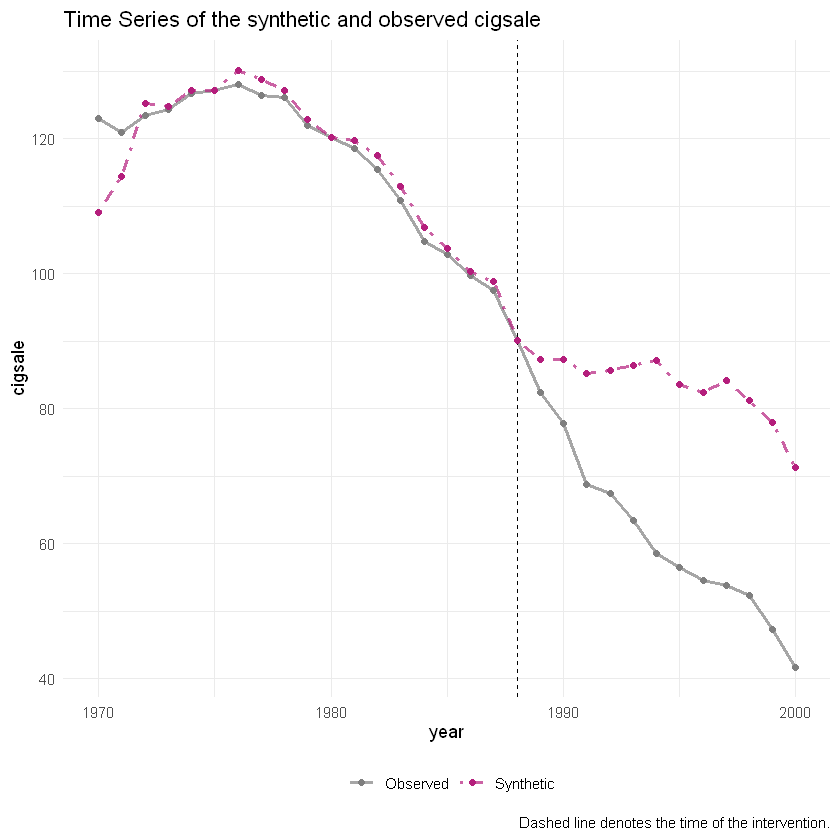
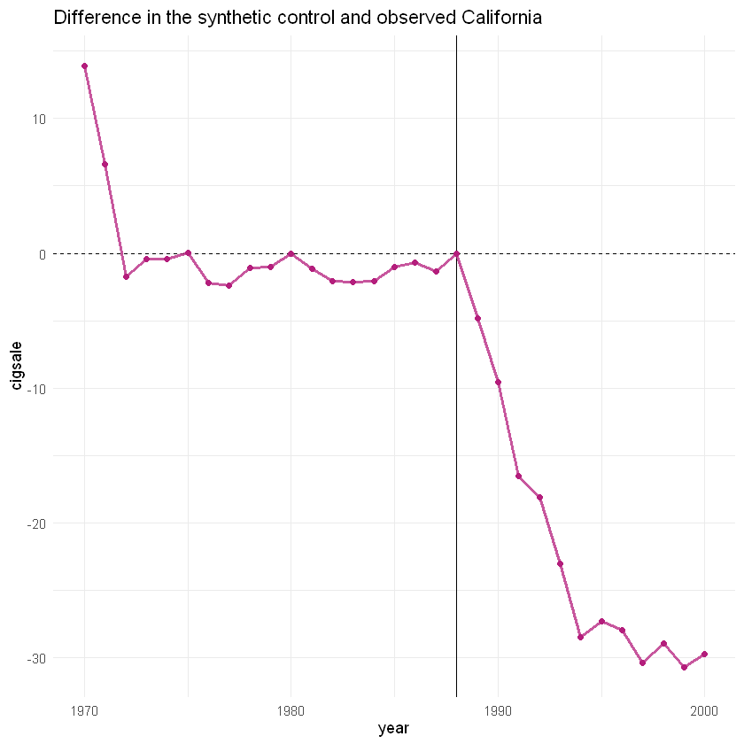

Mostrar/Ocultar Código
library(tidysynth)
require(tidysynth)
data(smoking)Warning message:
"pacote 'tidysynth' foi compilado no R versão 4.4.3"Atenção - Se você achou este conteúdo útil, considere apoiar o projeto me seguindo no Youtube, Instagram ou LinkedIn! 🚀
Warning message:
"pacote 'tidysynth' foi compilado no R versão 4.4.3"| state | year | cigsale | lnincome | beer | age15to24 | retprice |
|---|---|---|---|---|---|---|
| <chr> | <dbl> | <dbl> | <dbl> | <dbl> | <dbl> | <dbl> |
| Rhode Island | 1970 | 123.9 | NA | NA | 0.1831579 | 39.3 |
| Tennessee | 1970 | 99.8 | NA | NA | 0.1780438 | 39.9 |
| Indiana | 1970 | 134.6 | NA | NA | 0.1765159 | 30.6 |
| Nevada | 1970 | 189.5 | NA | NA | 0.1615542 | 38.9 |
| Louisiana | 1970 | 115.9 | NA | NA | 0.1851852 | 34.3 |
| Oklahoma | 1970 | 108.4 | NA | NA | 0.1754592 | 38.4 |
| New Hampshire | 1970 | 265.7 | NA | NA | 0.1707317 | 31.4 |
| North Dakota | 1970 | 93.8 | NA | NA | 0.1844660 | 37.3 |
| Arkansas | 1970 | 100.3 | NA | NA | 0.1690068 | 36.7 |
| Virginia | 1970 | 124.3 | NA | NA | 0.1894216 | 28.8 |
| Illinois | 1970 | 124.8 | NA | NA | 0.1669667 | 41.4 |
| South Dakota | 1970 | 92.7 | NA | NA | 0.1786787 | 38.5 |
| Utah | 1970 | 65.5 | NA | NA | 0.2020774 | 34.6 |
| Georgia | 1970 | 109.9 | NA | NA | 0.1874455 | 34.3 |
| Mississippi | 1970 | 93.4 | NA | NA | 0.1831304 | 36.2 |
| Colorado | 1970 | 124.8 | NA | NA | 0.1909502 | 29.4 |
| Minnesota | 1970 | 104.3 | NA | NA | 0.1747241 | 39.1 |
| California | 1970 | 123.0 | NA | NA | 0.1781583 | 38.8 |
| Texas | 1970 | 106.4 | NA | NA | 0.1831414 | 40.4 |
| Kentucky | 1970 | 155.8 | NA | NA | 0.1813101 | 28.3 |
| Maine | 1970 | 128.5 | NA | NA | 0.1690141 | 38.0 |
| North Carolina | 1970 | 172.4 | NA | NA | 0.1935484 | 27.3 |
| Montana | 1970 | 111.2 | NA | NA | 0.1757925 | 34.0 |
| Vermont | 1970 | 122.6 | NA | NA | 0.1797753 | 37.7 |
| Iowa | 1970 | 108.5 | NA | NA | 0.1688496 | 37.7 |
| Connecticut | 1970 | 120.0 | NA | NA | 0.1629288 | 42.2 |
| Kansas | 1970 | 114.0 | NA | NA | 0.1805247 | 34.2 |
| Delaware | 1970 | 155.0 | NA | NA | 0.1733577 | 39.0 |
| Wisconsin | 1970 | 106.4 | NA | NA | 0.1742870 | 38.5 |
| Idaho | 1970 | 102.4 | NA | NA | 0.1781206 | 33.8 |
| ⋮ | ⋮ | ⋮ | ⋮ | ⋮ | ⋮ | ⋮ |
| Wyoming | 2000 | 90.5 | NA | NA | NA | 267.1 |
| Montana | 2000 | 75.5 | NA | NA | NA | 260.7 |
| Kentucky | 2000 | 156.2 | NA | NA | NA | 243.4 |
| Kansas | 2000 | 79.8 | NA | NA | NA | 271.2 |
| Nevada | 2000 | 93.2 | NA | NA | NA | 303.5 |
| Utah | 2000 | 40.7 | NA | NA | NA | 312.9 |
| Delaware | 2000 | 140.7 | NA | NA | NA | 276.2 |
| Arkansas | 2000 | 99.4 | NA | NA | NA | 279.3 |
| Oklahoma | 2000 | 108.9 | NA | NA | NA | 272.6 |
| South Dakota | 2000 | 75.1 | NA | NA | NA | 272.9 |
| Indiana | 2000 | 125.5 | NA | NA | NA | 260.2 |
| North Carolina | 2000 | 109.0 | NA | NA | NA | 257.3 |
| New Hampshire | 2000 | 147.3 | NA | NA | NA | 313.9 |
| Tennessee | 2000 | 108.7 | NA | NA | NA | 261.2 |
| Iowa | 2000 | 88.9 | NA | NA | NA | 286.3 |
| West Virginia | 2000 | 107.9 | NA | NA | NA | 253.7 |
| Texas | 2000 | 69.3 | NA | NA | NA | 292.3 |
| Missouri | 2000 | 113.8 | NA | NA | NA | 258.8 |
| Nebraska | 2000 | 77.6 | NA | NA | NA | 288.3 |
| Illinois | 2000 | 70.0 | NA | NA | NA | 312.7 |
| Pennsylvania | 2000 | 87.9 | NA | NA | NA | 280.1 |
| Virginia | 2000 | 96.7 | NA | NA | NA | 252.8 |
| Maine | 2000 | 82.9 | NA | NA | NA | 330.5 |
| Idaho | 2000 | 66.9 | NA | NA | NA | 275.9 |
| Mississippi | 2000 | 97.2 | NA | NA | NA | 272.0 |
| New Mexico | 2000 | 53.8 | NA | NA | NA | 279.8 |
| Connecticut | 2000 | 71.4 | NA | NA | NA | 312.3 |
| Vermont | 2000 | 88.9 | NA | NA | NA | 301.1 |
| Ohio | 2000 | 99.9 | NA | NA | NA | 265.4 |
| Rhode Island | 2000 | 83.1 | NA | NA | NA | 322.9 |
Warning message: "Using `size` aesthetic for lines was deprecated in ggplot2 3.4.0. ℹ Please use `linewidth` instead. ℹ The deprecated feature was likely used in the tidysynth package. Please report the issue to the authors."

Ignoring unknown labels: • colour : "" • linetype : ""
